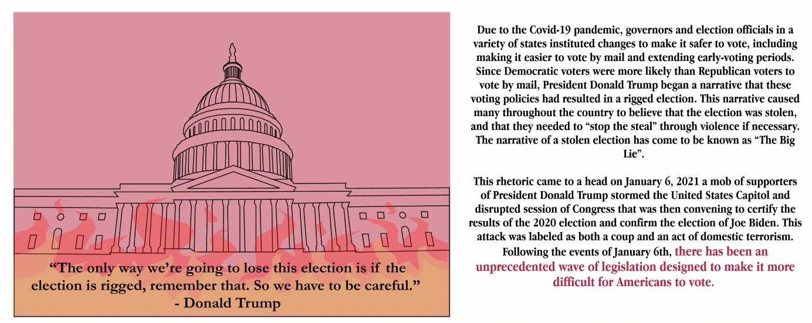

A New Challenge for Voting Rights
Exploring the Ways in Which Recent Legislation Threatens to Undermine the Integrity of American Democracy
By Austin Biehl, Aiste Cechaviciute, and Jessica Ingle
Exploring the Ways in Which Recent Legislation Threatens to Undermine the Integrity of American Democracy
By Austin Biehl, Aiste Cechaviciute, and Jessica Ingle
January 6th 2022
The State of Voting Rights in America
Click "Start Animation" below to see the increase in number of voters per polling location from 2012-2020.
What is driving this change?
Throughout 2021 and into 2022, “The Big Lie” has driven a surge in legislation to restrict voting access. Many Republicans profess to now view America’s electoral process with lower levels of trust and consequently, much of this legislation has come from Republican-led states.
Where Are These Bills?
While many bills are being passed by Republican controlled legislatures, anti-voting legistlation is not solely a red state issue. 49 states introduced anti-voting legislation, and bills passed in both red and blue states.

Of the 10 states that introduced the most anti-voting related legislation in 2021, 5 were Democrat led, 4 Republican led, and 1 was mixed. It is worth noting that four of these states were amongst those that were most closely contested in the 2020 election including Arizona, Pennsylvania, Michigan, and Georgia. Use the table below to explore

Of the 10 states that passed the most anti-voting related legislation in 2021, 2 were Democrat led, 7 Republican led, and 1 was mixed. Use the table below to explore.

The differences between the political affiliations of the states that introduced bills versus the states that passed bills suggests that while voting rights are currently being threatened in all states, currently such legislation is being passed more easily in Republican controlled legislatures.

What about 2022?
Preliminary data suggests that 2022 may bring another swath of of anti-voting rights legistlation. Comparing the first 2 weeks of the year, 2022 opened with nearly 3x as many voting restrictive bills as 2021.

The Effects of Gerrymandering on Voting Fairness
After the Fourteenth and Fifteenth Amendments to the US Constitution gave all male citizens the right to vote, some state and local governments established legal barriers aimed at preventing minorities from exercising their right to vote. The Voting Rights Act of 1965 sought to secure voting rights for racial minorities by outlawing discriminatory voting practices to ensure fair access to voting. Several amendments to the act have expanded voting protections, but other actions have had negative consequences. In 2013, the Supreme Court issued a ruling that dismantled the coverage formula in section 4(b) of the Voting Rights Act. The coverage formula mandated that states and localities with a history of discrimination again minority voters must clear changes to voting acts by the federal government. The dismantling of this portion of the Voting Rights Act makes it more difficult to see and prevent changes to voting access that may negatively impact minorities.
One such process is the drawing of voting districts. Through the practice of gerrymandering, states may choose districts based on demographic factors that favor their parties' outcomes, which can impact the fairness of an election. Who is commissioned to participate in the district drawing can greatly impact this process.
States such as Georgia engage in Partisan District Mapping allowing both parties to propose new districting maps, with the party that controls the House making the final map selection. This creates a cascading effect wherein the dominant political party is able to continually tip district maps in its favor, thus reinforcing its ability to remain in control
States like Arizona use Independent Redistricting Commissions allowing bi-partisan groups to draw districts that reflect the most recent census. This process starts from scratch each time, rather than relying on the shape of existing districts.
Important metrics of competitiveness and fairness
Efficiency gap measures the difference between the two party's "wasted votes" (votes that were cast for the losing party, or votes in excess of 50 percent of the total vote that were cast for the winning party), that do not have as much power per district. The greater the absolute value is, the more biased it is towards one party. For a state to be equitable in the spirit of the Voting Rights Act, the Efficiency gap should be around +/-2.
Efficiency Gap in Georgia vs. Arizona

Median Seat shows the difference between the partisan leaning for the most median district, compared to the state as a whole. Theoretically, the political leaning of any states’ median district should be closely representative of the political leanings of the state as a whole.
Median Seat in Georgia vs. Arizona

Competitive Districts show how many total districts in the state have a partisan leaning of less than 5 for either party
Minority representation per district should be close to 50% wherever possible, in accordance to the Voting Rights Act. A common practice of gerrymandering involves lumping minorities into just a few districts, leading to an overall underrepresentation of the group within the state.

By examining these two historically red-leaning states, Georgia and Arizona, we can examine the effect of having a bi-partisan process for drawing districts. Arizona, using an Independent Redistricting Commission, achieved more competitiveness and fairness in their election than the state of Georgia. Next, we will see how gerrymandering and restrictive voting rights bills impact actual voters.
The State of Voting in Georgia
Restrictive voting bills and partisan gerrymandering are clearly bad for the integrity of American democracy. But how do these political acts impact everyday voters? To determine this, we looked specifically to Georgia, which turned into a battleground state during the 2020 election.
During the 2020 election, prior to the introduction of legislation that restrict voting rights, Georgia faced issues with equal access to polling locations. This unequal access often occurred across racial lines, with nonwhite Georgians waiting in longer lines at the polls. There are a few reasons underlying this unequal access:

The growth in voter rolls, coupled with a reduction in polling locations, has had major impacts in Metro Atlanta, the states most populous region, which is a majority Black metro area. During the 2020 election, Metro Atlanta contained 50% of the state’s voters, but only 38% of polling locations.
This discrepency is largely due to increases in population. From 2010-2020, the population in metro Atlanta grew 16%, outpacing the state's population growth of 11%. This resulted in a sharp increase in the number of voters assigned to each poll.


Despite these voting difficulties, Democrats still won the state of Georgia
In Georgia, 73% of Democrats in the state are Black, and only 25% are white. Disenfranchising Black voters will disproportionately harm the Democratic party. In response to this Presidential loss, Georgia Republicans introduced new legislation, the Election Integrity Act of 2021 which curbs voting access for many individuals, and disproportinately targets nonwhite voters.

What does the Election Integrity Act do?
To find out more about how the Election Integrity Act of 2021 will impact voters, hover over the top of the visualization

How can you help?

...and most importantly...
References
1. https://www.culawreview.org/journal/georgias-election-integrity-act-of-2021-how-strict-voter-id-requirements-negatively-impact-people-of-color
2. https://vote.cae.gatech.edu/get-informed/sb202-election-integrity-act-2021
3. https://www.npr.org/2020/10/17/924527679/why-do-nonwhite-georgia-voters-have-to-wait-in-line-for-hours-too-few-polling-pl
4. https://www.nytimes.com/2021/04/02/us/politics/georgia-voting-law-annotated.html#link-33ed22aa
5. https://www.britannica.com/event/United-States-Capitol-attack-of-2021
6. https://www.brennancenter.org/
7. https://www.senate.gov/senators/
8. https://www.npr.org/2021/12/23/1065277246/trump-big-lie-jan-6-election
9. https://results.enr.clarityelections.com/GA/
10.https://github.com/publici/us-polling-places
11.https://www.theguardian.com/us-news/2020/jun/25/shelby-county-anniversary-voting-rights-act-consequences
12.https://projects.fivethirtyeight.com/redistricting-2022-maps/arizona/draft_13_9/
13.https://projects.fivethirtyeight.com/redistricting-2022-maps/georgia/
14.https://www.nytimes.com/2021/04/02/us/politics/georgia-voting-law-annotated.html
15.https://www.archives.gov/milestone-documents/voting-rights-act#:~:text=This%20act%20was%20signed%20into,as%20a%20prerequisite%20to%20voting.